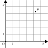
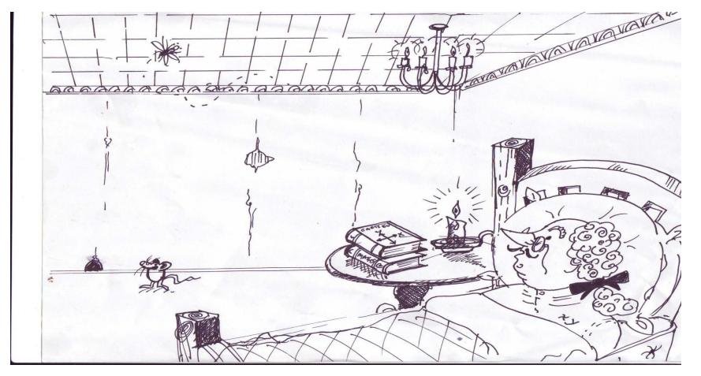
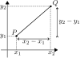
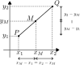
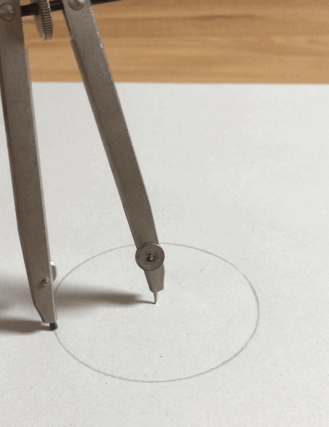
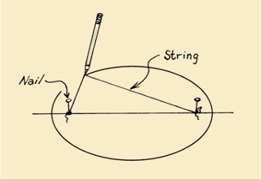
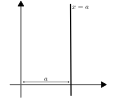
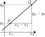
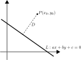

Coordinate Geometry
Introduction to Engineering Mathematics
Foundations of coordinate geometry
What is coordinate geometry?
Studying geometry through coordinate calculations.


Example: distance between two points
Distance between \(P\) and \(Q\): \[ d(P, Q) = \sqrt{(x_2 - x_1)^2 + (y_2 - y_1)^2} \]

Example: midpoint between two points
Coordinates of midpoint between \(P\) and \(Q\): \[ M = \left( \frac{x_1 + x_2}{2}, \frac{y_1 + y_2}{2} \right). \]

Locus of points
“Locus” = Set of points satisfying some condition.
- Circle: All points at given distance from a fixed center.
- Ellipse: All points for which the sum of distances to two fixed points (focal points) is constant
- Parabola: All points that are at equal distance from a fixed point and a given line (directrix)


Example
Find the locus of points for which the distance to the \(x\)-axis is equal to the distance to the point \((0, 1)\).
Circles
Circles
Locus of points \(P(x, y)\) at distance \(R\) from center \(C(h, k)\).
We have \(d(P, C) = R\) so that \[ \sqrt{(x - h)^2 + (y - k)^2} = R, \] and by squaring \[ \boxed{(x - h)^2 + (y - k)^2 = R^2} \]
Example
Find the equation of the circle that has the points \((1, 1)\) and \((7, 9)\) as end points of a diameter.
Example
Find the center and radius of the circle given by \(x^2 + y^2 - 6x + 2y + 8 = 0\).
Lines
Lines
Line not parallel to the \(y\)-axis: \[ \boxed{y = mx + q} \] with
- \(m\): the slope
- \(q\): the intercept

Lines
Line parallel to the \(y\)-axis: \[ \boxed{x = a} \] with
- \(a\): where the line intersects the \(x\)-axis

Finding the slope of a line
Take
- \(\Delta x = x_2 - x_1\)
- \(\Delta y = y_2 - y_1\)
Then \[ \boxed{m = \frac{\Delta y}{\Delta x} = \frac{y_2 - y_1}{x_2 - x_1}} \]
“\(\Delta x\) steps to the right, \(\Delta y\) steps up/down.”

Example
Find the equation for the line through \((1, 5)\) and \((2, 7)\).
Properties
Equation for the line through \((x_0, y_0)\) with slope \(m\): \[ y - y_0 = m(x - x_0) \]
Equation for the line through the points \((x_1, y_1)\) and \((x_2, y_2)\): \[ y - y_1 = \frac{y_2 - y_1}{x_2 - x_1}(x - x_1). \]
Parallel/perpendicular lines
Two lines are …
- parallel if their slopes are the same: \(\boxed{m_1 = m_2}\)
- perpendicular if their slopes satisfy: \(\boxed{m_1 m_2 = -1}\)
Angle between two lines
In general, the angle \(\theta\) between two lines is given by \[ \tan \theta = \left| \frac{m_1 - m_2}{1 + m_1m_2} \right|, \] where \(m_1\) and \(m_2\) are the slopes of the lines.
Example
Given two lines \(L_1: x + 2y - 3 = 0\) and \(L_2: kx + y - 5 = 0\), for which value of \(k\) are \(L_1\) and \(L_2\) …
- Parallel?
- Perpendicular?
- At an angle of \(45^\circ\)?
Distance of a point to a line
Distance between point \(P(x_0, y_0)\) and line \(L: ax + by + c = 0\): \[ D = \frac{|ax_0 + by_0 + c|}{\sqrt{a^2 + b^2}}. \]

Different representations of lines
- Slope/intercept:
- \(y = mx + q\) (not parallel to \(y\)-axis)
- \(x = a\) (parallel)
- Linear representation: \(ax + by + c = 0\)
- Polar representation:
- For line through the origin: \(\tan \theta = m\)
- For line not through the origin: \[ r = \frac{q}{\sin \theta - m \cos \theta} \]
Applications
Exercise
Find the equation of the common tangent line between two touching circles given by \[\begin{align*} C_1: & \ x^2 + y^2 - 6x - 12y + 37 = 0 \\ C_2: & \ x^2 + y^2 - 6y + 7 = 0. \end{align*}\]

Source: xkcd 2735